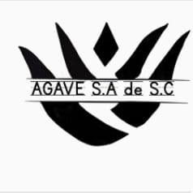
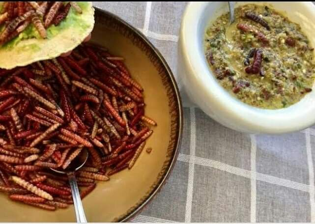

Al finalizar la extraccion del chinicuil llega a nuestras manos en donde manos mexicanas se encargan
de la realizacion de la salsa
Los chinicuiles se cuecen en comal
Lavar perfectamente los tomates y chiles; colocarlos en el comal para que se cuezan.
En el molcajete; empezar a moler el ajo, los chiles, los tomates y finalmente los chinicuiles
Al pasar por
este proceso son envasados y sellados
Asi es como realizamos nuestra salsa de chinicuil, no contiene ningun conservador
artificial su conservador es el mismo ago
La salsa tiene una duracion de 3 semanas con sus debidos cuidados
